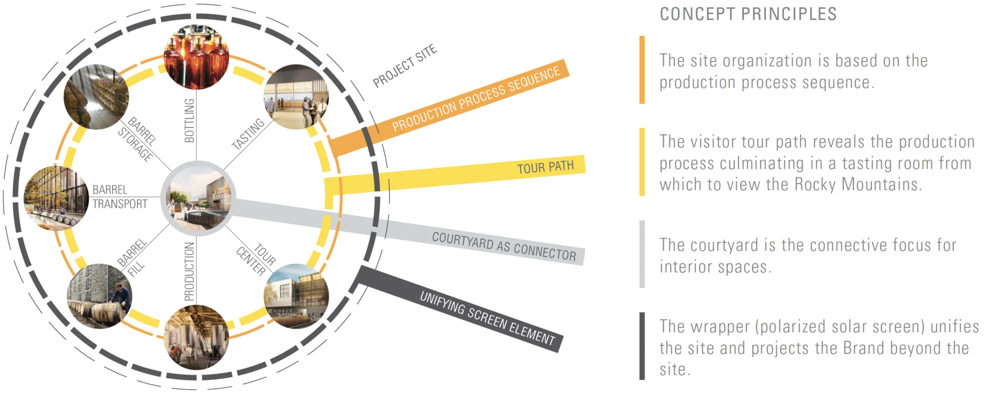
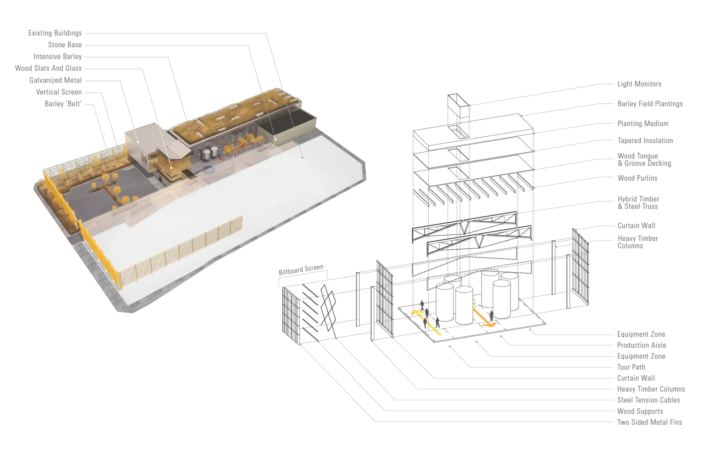
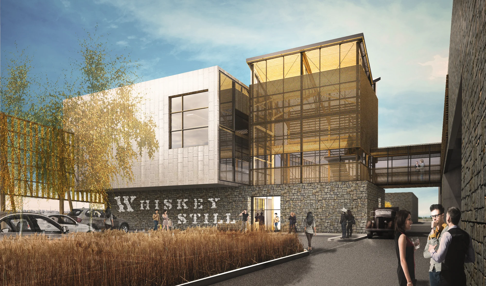
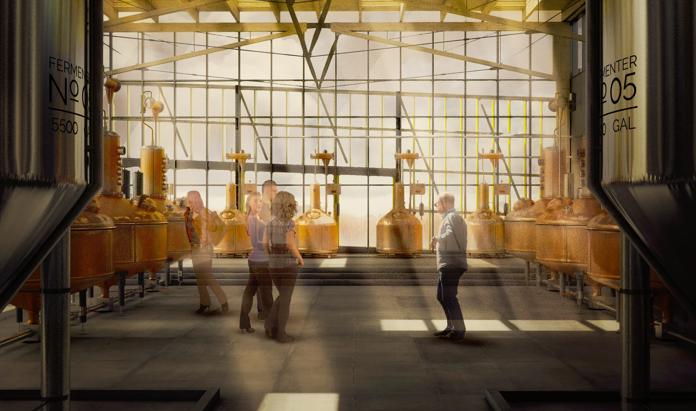
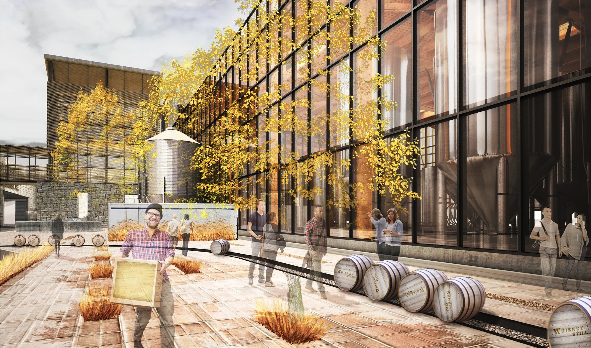
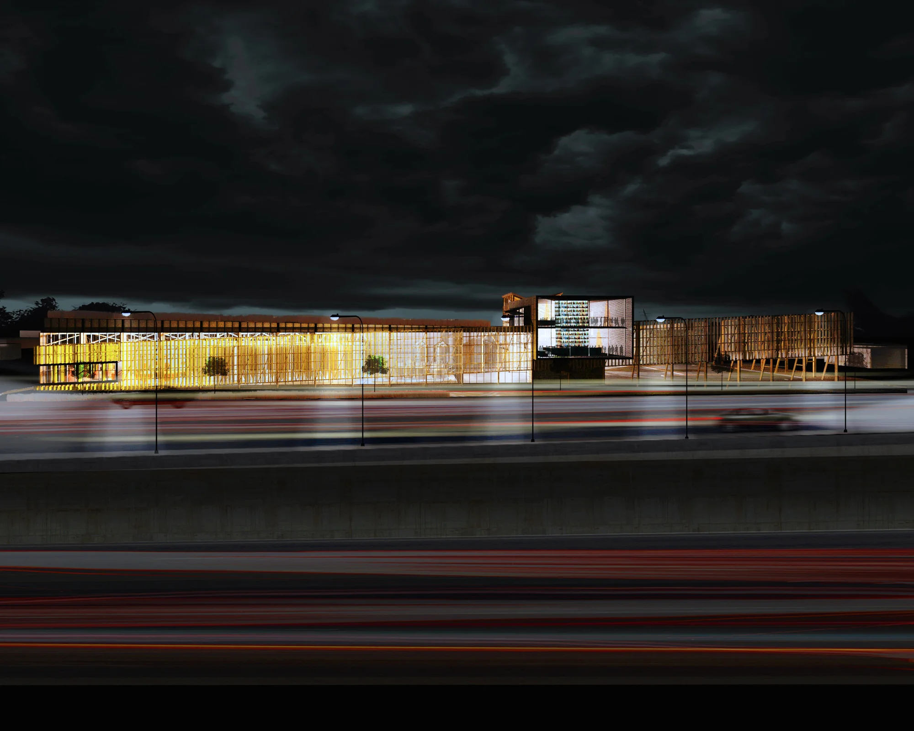

Architecture|Speculative
Urban Whiskey Distillery
Arch 11|Denver, Colorado|2015
A polarized solar screen unifies the site and turns the craft of whiskey making into public signage.
The history, process, and craft of spirit making inform the proposed expansion of a local whiskey distillery. Architectural and material expressions reconnect the distillery to its Colorado agrarian roots and create an authentic experience for visitors.
The site layout organizes the facility to express the sequence and emphasize the craft of fine whiskey distilling, aging, and bottling, creating an efficient and cohesive campus. The perimeter of the site is defined by a polarized solar screen conceived as dynamic signage that celebrates the brand and invites passers-by to engage in the process of making and enjoying spirits.
Project Facts
69,500 SF building on a 130,000 SF site. Heavy timber, corrugated metal, weathered snow fencing, and native stone. Unbuilt.
Scroll for more → click any image to view full size

Aerial view with Denver skyline

Site concept diagram

Exploded axonometric

Street entry

Still house interior

Tour courtyard

Night exterior